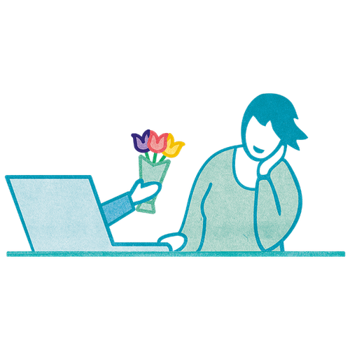
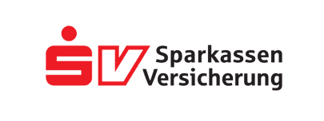
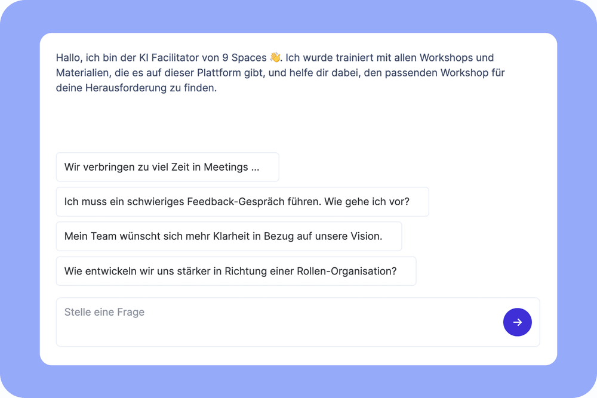

Solo
1 Zugang
299€
pro Jahr
zzgl. MwSt
Jährliche Abrechnung, jederzeit kündbar
Richtig gute Teams sind mehr als die Summe ihrer einzelnen Mitglieder. Sie stärken ihr Miteinander und achten auf die Beziehungsebene.
Auf dieser Seite lernst du, wie 9 Spaces euch dabei helfen kann, das Teamgefühl zu förden.


Das Internet ist voll mit flachen Teambuilding-Maßnahmen. Unsere Erfahrung ist: Den Zusammenhalt im Team verbessert ihr nicht, indem ihr eure Augen schließt und euch rückwärts in die Arme eurer Kolleginnen und Kollegen fallen lasst. Beziehungsarbeit ist echte Arbeit.
Du suchst Möglichkeiten, euren Team-Zusammenhalt nachhaltig zu verbessern? Auf 9 Spaces findest du eine große Auswahl an kleinen und größeren Werkzeugen, die du in dein Team oder deine Organisation tragen kannst.

Impact erhöhen, Strukturen verbessern und einfach gut zusammen arbeiten. Mit unseren Workshops und Methoden hast du alles, um dein Team oder deine Organisationen zu transformieren.
Unser KI-Facilitator findet einen Workshop für dich, der genau zu deinen Herausforderungen passt.

Du brauchst noch Gründe dafür, warum es sich lohnt, in den Team-Zusammenhalt zu investieren? Wir hoffen nicht. Wenn doch, findest du unten drei Stück:
Gute Team-Leistungen entstehen, wenn möglichst viele Menschen ihre Stärken einbringen können. Dafür müssen die eigenen Stärken, aber auch die Stärken der anderen Team-Mitglieder bekannt sein.
Die immer noch häufig gelebte Kultur der Angst ist ein Relikt aus alten Zeiten. Teams brauchen eine Kultur des offenen Austauschs, in denen Menschen sich trauen, Risiken einzugehen und auch unangenehme Dinge auszusprechen. Gerade in Umgebungen mit hohem Innovationsdruck braucht es psychologische Sicherheit für die Team-Mitglieder.
Die Arbeit ist ein sozialer Raum, in dem Menschen zusammenkommen. Diese Menschen legen ihre Bedürfnisse nach Team-Gefühl und Verbindung nicht an der Garderobe ab. Beziehungen entstehen sowieso. Schafft eine Umgebung, die starke Beziehungen fördern, nicht verhindern.
zzgl. MwSt
Jährliche Abrechnung, jederzeit kündbar
Zugang für mehrere Mitarbeitende in einem maßgeschneiderten Plan
Alle Features und Mehrwerte auf einem Blick?